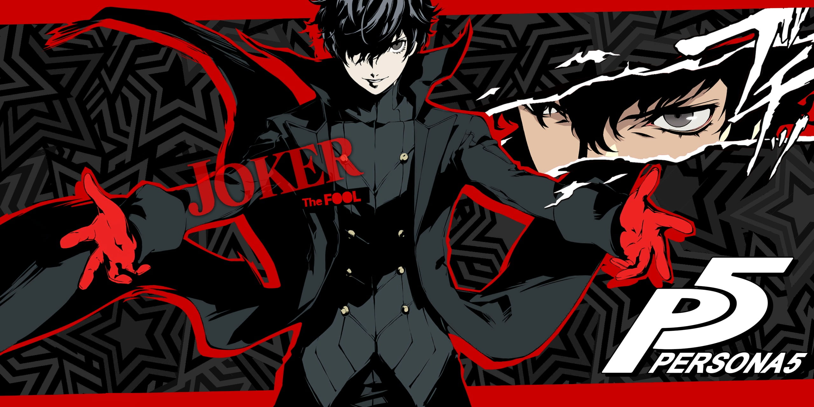
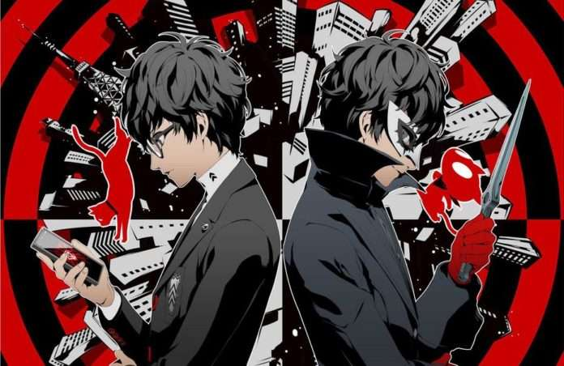

Meet the Phantom Thieves
Lead a revolution in the shadows of Tokyo.
In "Persona 5 Royal", you become Joker — a masked vigilante who joins a group of students calling themselves the Phantom Thieves of Hearts. Dive into an unforgettable blend of turn-based combat, social simulation, and narrative depth as you challenge the corruption plaguing society.
Meet the Cast Watch the TrailerIconic Characters & Mysterious Palaces
Ann Takamaki is a courageous and compassionate member of the Phantom Thieves. Her Persona, Carmen, reflects her inner strength and sense of justice.
The first Palace encountered — a twisted castle built on the distorted desires of a corrupt teacher. Here, the Phantom Thieves learn to confront authority in the most surreal way possible.
Explore the surreal world of cognition, Personas, and social bonds as you change hearts and rewrite fate.
The Sound of Rebellion
Dynamic jazz, epic battles, and unforgettable vocals.
The soundtrack of "Persona 5 Royal", composed by Shoji Meguro and Lyn, is a genre-defying masterpiece. From battle themes like "Take Over" to emotional tracks like "I Believe," the music enhances every moment.
Listen on YouTube Full Tracklist